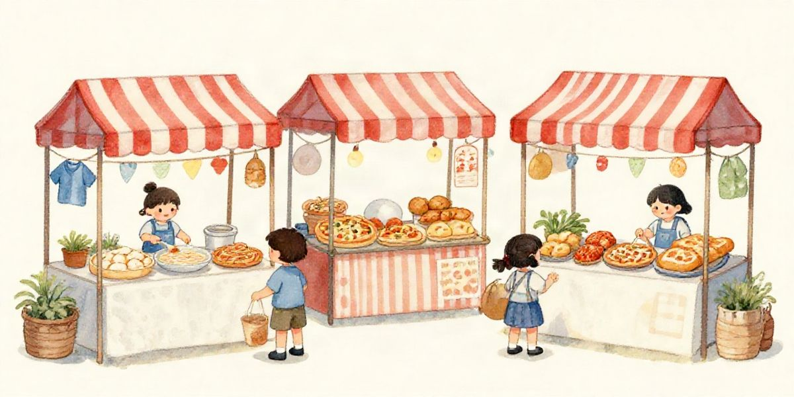
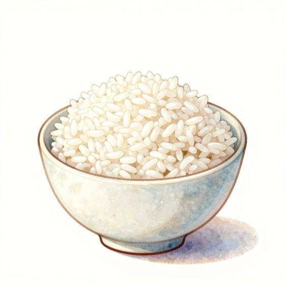
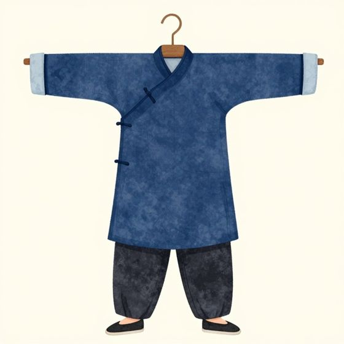
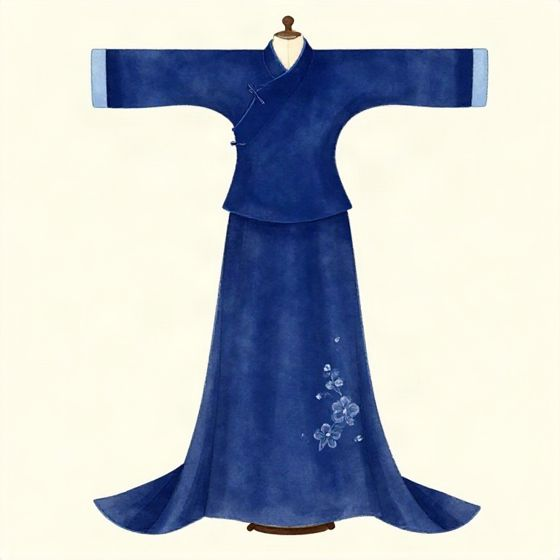

四年級社會・第四單元〈家鄉的多元文化〉
歡迎光臨 家鄉文化市集！

逛逛每一個攤位：先觀察 👀、再動手 ✋，最後用一句話說出你的發現 💬
🧑🏫 老師看這裡：使用說明與設定
- 每一站只有一個主要操作，可投影全班一起做，也可在 iPad 上個別操作；可隨時回頭修改、重試，不計分、不限時。
- 「語音輸入你的想法」：請學生點文字框，再按 iPad 鍵盤上的 🎤 聽寫，或直接打字。全程只接收文字。
- 主線：②創意廚房（選 A、B → 決定怎麼融合 → 做出成品圖 → 標出特色）→ ③菜單、給顧客看、做成海報。①④⑤可作前導或分站，⑥驗收挑戰用於課末。
- 作品只存在這台裝置的瀏覽器裡。要留存請按「下載海報」，或長按海報圖片存到相簿。
- 網站插圖皆為 AI 繪製的示意圖；服飾細節請以課本 p.60–63 照片為準，命名站人物為虛構角色。
AI 生圖金鑰（Pollinations，pk_ 開頭）
沒有金鑰或網路被擋時，「做出我的料理」會改成用 A、B 兩道料理的插圖組成「料理設計示意圖」，課程一樣能進行。
🍚
第一站｜同樣是米，怎麼變成不同料理？
依序點開料理卡，再挑兩張並排比一比。

桌上的一碗米
💡 四張都打開後，點兩張卡片就能並排比較（再點一次可以取消）。
同樣從米出發，這兩道料理哪裡不一樣？
👩🍳
第二站｜創意廚房：A＋B 合成一道新料理
新料理＝保留 A 的特色 ＋ 加入 B 的特色
點每一張卡片，看看新料理「保留了 A 的什麼」、「加入了 B 的什麼」、「怎麼結合」。（課本 p.58–59）
A主角料理
新料理會保留它的外型或做法（像米漢堡保留漢堡的外型）。
B加入的料理
新料理會加入它的食材或味道（像米漢堡加入東方的米飯）。
 A保留 的什麼？
A保留 的什麼？
 B加入 的什麼？
B加入 的什麼？
🔗 B 的特色要放在哪裡？
還沒做料理
大約 5–30 秒
🍳
AI 廚師烹飪中…大約 5–30 秒
按下按鈕後，AI 會依照你的設計，畫出一道完整料理的成品圖。
🅿️ 也可以到班級 Padlet 用 AI 做圖
- 按 📋 複製我的料理描述，再按 打開 Padlet。
- 在 Padlet 按 ＋ 新增貼文 → 點最右邊的 「⋯／所有工具」 → 選 「AI 圖像（I can't draw）」。
- 在描述框長按 → 貼上，按 Enter，等一下會出現幾張圖，選一張最像你設計的，再發佈貼文。
- 把那張圖放大，同時按「電源鍵＋音量上鍵」截圖。
- 回到這裡按 📷 上傳截圖，選剛剛的截圖，移動、縮放只留下料理。
你保留了 A 的什麼、加入了 B 的什麼？請在成品圖上指給同學看。
📋
第三站｜替新料理寫一張菜單
用兩三句話介紹你的料理，再請同學當顧客！
想換圖？回到 創意廚房 修改。
👘
第四站｜一件衣服，可以穿出什麼故事？
點衣服上的 數字圓點，比較哪些設計保留下來、哪些因場合而改變。
傳統客家藍衫

創意設計的藍衫禮服

傳統藍衫
點一個數字圓點開始比較
點一個數字圓點開始比較
藍衫禮服
※ AI 示意插圖。請對照課本 p.61「六堆運動會上的藍衫」與 p.62「藍衫禮服」照片觀察。
🃏 傳統服飾卡：點卡片翻面，看穿著場合與文化意義
你從哪個地方看出，設計師把傳統服飾的特色帶進了新衣服？
🗣️
第五站｜家鄉裡，聽見不同語言與名字
先到車站聽廣播，再到市集報到處認識新朋友。
北投
Beitou
「北投」地名和凱達格蘭族語 Kipatauw 有關（課本 p.65）
點上面的語言按鈕，聽聽看站內廣播怎麼說。
觀察一下：這些廣播說的，是不是同一個地方？
市集報到處來了三位新朋友（虛構角色）。點名牌，聽聽他們名字的故事：
📌 命名方式會因族群、家庭而不同：有的名字帶著家人的祝福；有些原住民族會在名字後面加上父親或母親的名字；姓也可能跟爸爸或跟媽媽。
第一次見面，遇到不熟悉的名字，你會選哪一句？
遇到自己不熟悉的名字，你可以怎麼確認，讓對方感受到尊重？
🏆
驗收挑戰站
四個小遊戲，答錯也沒關係，看看說明再試一次！
先點左邊的米食，再點右邊的族群，把它們連起來。
翻兩張牌，找出「服飾」和「對應的族群／意義」。
先點一個料理，再點籃子把它放進去。哪些是原本的飲食文化？哪些是交流後的融合與創新？
🏠 原本的飲食文化
✨ 融合與創新
🖼️
創意料理海報牆
這台裝置做過的海報都貼在這裡。點海報可以放大、下載。
還沒有海報喔！到 第三站 做一張吧。